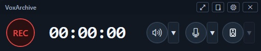
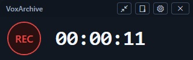
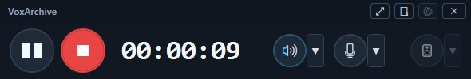
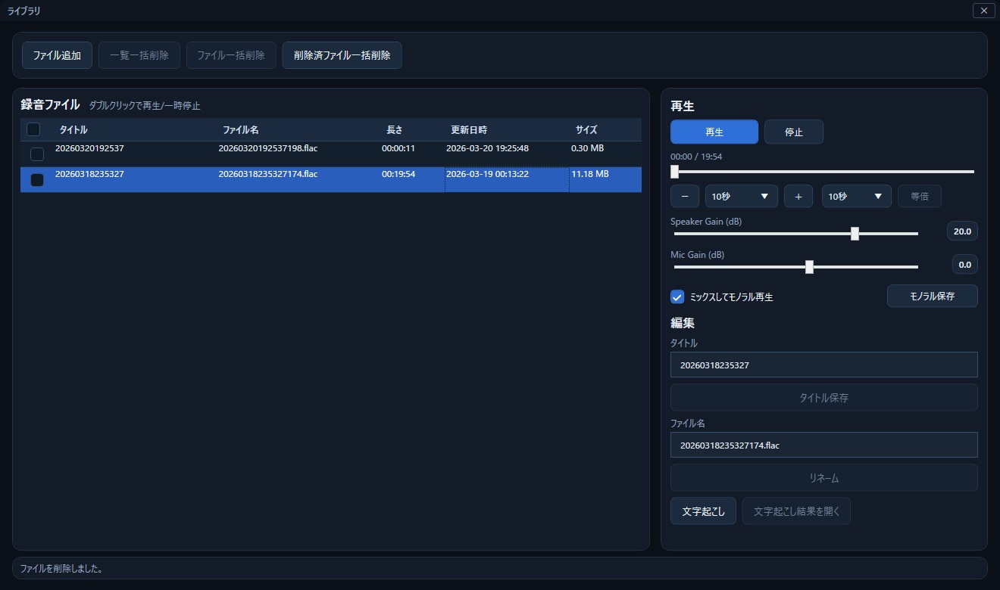
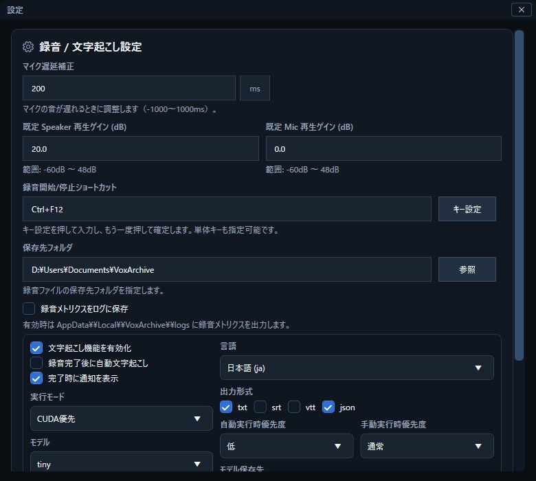
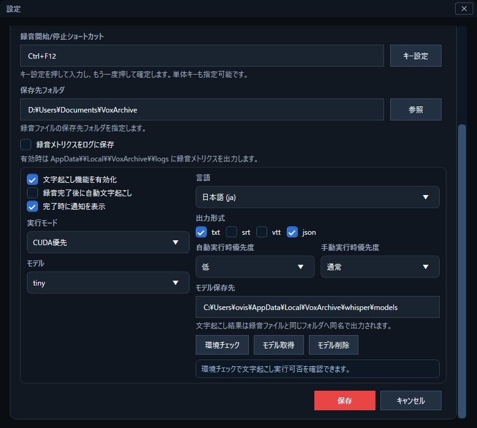

録音
- 録音開始 / 一時停止 / 再開 / 停止
- スピーカーモード / プログラムモード
- グローバルホットキー対応
スピーカー出力とマイク入力を同時録音し、Whisper による文字起こしまで一連で扱える音声アーカイブツールです。
記録後の再生・編集・出力も1つのアプリで完結します。






PC全体のスピーカー出力音を録音するモードです。 会議アプリやブラウザ、音楽プレイヤーなど、再生先が同じであればまとめて録音されます。
指定したプログラム（プロセス）の出力音だけを録音するモードです。 ほかのプログラムの音は録音対象に含めず、必要な音声だけを分離して記録したい場合に使います。
スピーカー側の音とマイク入力を同時に収録し、1つの音声ファイル内で別チャンネルとして保持しています。
これにより、録音前に音量を調整しなくとも録音後にゲインを調整して再生できるようになっています。
録音済み音声をWhisperで解析し、テキスト化する機能です。 手動実行だけでなく、録音後の自動実行にも対応しています。
迷った場合は sc版 を選ぶとセットアップが簡単です。
VoxArchive.Wpf.exe を起動winget install Gyan.FFmpeg
ffmpeg -version